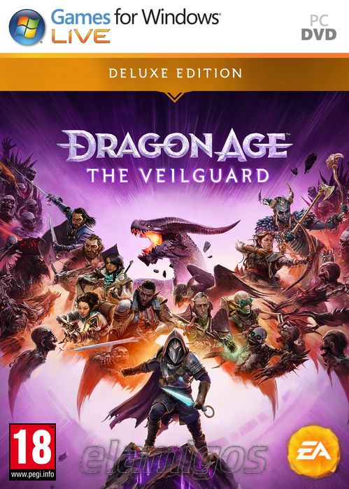

Dragon Age The Veilguard 83.3 GB
Género: RPG
Dragon Age: The Veilguard (anteriormente Dragon Age: Dreadwolf) es un
videojuego de rol desarrollado por BioWare y que es publicado por Electronic
Arts. The Veilguard, el cuarto juego principal de la franquicia Dragon Age,
es la secuela de Dragon Age: Inquisition
.